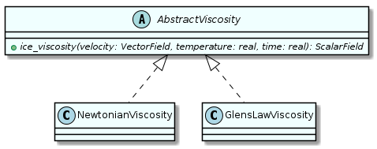
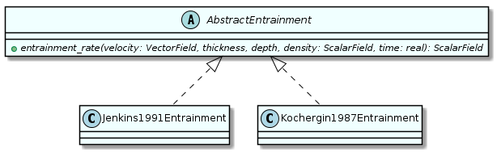
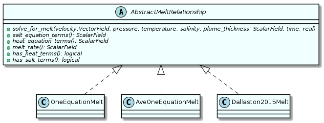
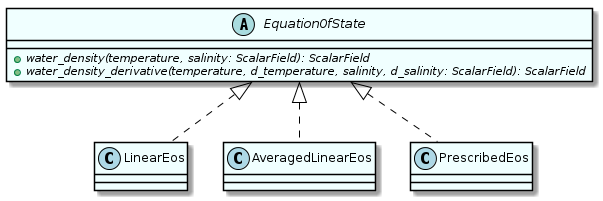
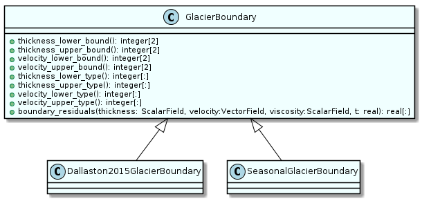
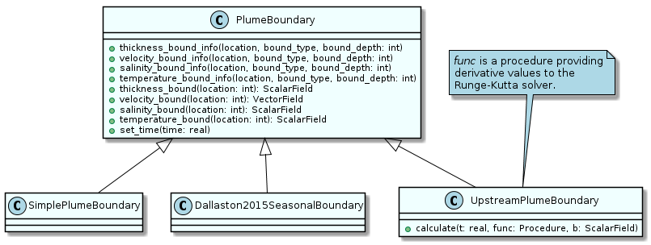
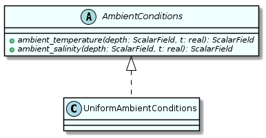

One of the goals of ISOFT is to allow choices of parameterisations to easily be changed. This is achieved using the Strategy pattern (Rouson, Xia, and Xu, 2014, Chapter 7), which provides a common abstract interface to accomplish some task, with subtypes implementing different strategies to do so. In ISOFT, the methods in the abstract types were generally given a large number of arguments, to ensure sufficient information is available for all potential parameterisations. Parameter and coefficient values can be specified for each parameterisation when initialising its object.
The only parameterisation for the ice shelf is viscosity. The general
interface is provided by the abstract_viscosity type. It’s subtypes
are newtonian_viscosity, which returns a uniform_field all
cases, and glens_law_viscosity which calculates the viscosity from
the ice velocity as described in equation 5. Currently Glen’s law is
only implemented for the 1-D case, as attempting to implement it for
higher dimensions resulted in a compiler bug. A class diagram is provided below.

The plume contains a few parameterisations. The subtypes of abstract_entrainment calculate an entrainment rate for the plume. These are jenkins1991_entrainment and kochergin1987_entrainment, implementing equations 14 and 15, respectively. The abstract_melt_relationship provides an interface for calculating the melt rate of the ice, in addition to the heat and salt fluxes resulting from melting. The one equation approximation of equation 17 was implemented as one_equation_melt. A variation of this was implemented as ave_one_equation_melt, implementing the horizontally-averaged version of the one equation formulation found in equations 48 and 49. The subtype dallaston2015_melt provides a way to convert from the scaling choices used by Dallaston, Hewitt, and Wells (2015) to those used in ISOFT, which was useful for writing unit tests. Finally, the abstract type equation_of_state sets out the interface for calculating the density of water from salinity and temperature. Subtype linear_eos implements the linearised equation of state in equation 20. The related ave_linear_eos provides additional methods methods for calculating and , as defined in equations 46 and 47, respectively. Last, the subtype prescribed_eos calculates the density assuming no dependence on temperature and using a prescribed salinity profile; this is also useful in unit tests. Class diagrams for each set of derived types are provided below.



A similar approach was taken for boundary conditions and ambient ocean properties. The types glacier_boundary and plume_boundary (class diagrams below) provide interfaces for identifying the types of boundary conditions at different locations and determining the appropriate values. The default implementations effectively do not specify boundary conditions and the methods must be overridden to be useful. The interface provided by plume_boundary is quite different from that provided by glacier_boundary. The latter should ideally be refactored to be closer to the more usable interface provided by the former. The subtypes for glacier_boundary are dallaston2015_glacier_boundary, which prescribes a time-independent ice thickness and velocity at the grounding line and a balance between normal stress and hydrostatic pressure at the calving front, and seasonal_glacier_boundary, which modifies introduces sinusoidal or square-wave variation to the grounding line velocity.


The first subtype of plume_boundary is simple_plume_boundary, which implements Dirichlet boundary conditions at the grounding line and Neumann conditions (zero gradient) for velocity, salinity, and temperature at the calving front. Closely related to this type is dallaston2015_seasonal_boundary, which modifies the boundary conditions by sinusoidally perturbing the plume thickness and velocity at the grounding line. The type which was ultimately used in all simulations was upstream_plume_boundary. This takes a user-provided function which specifies the inflow value of each plume variable and then, assuming no diffusion, integrates the plume a small distance upstream along the current basal draft of the ice shelf using rksuite_90 (Brankin and Gladwell, 1994). This allows the plume solver itself to avoid handling narrow boundary layers where the plume salinity and temperature change rapidly. Outflow conditions remain unchanged. Ambient ocean conditions are described according to the interface defined by the abstract type ambient_conditions. As shown in the class diagram below, at present only one implementation is provided (uniform_ambient_conditions), specifying constant ambient salinity and temperature.
